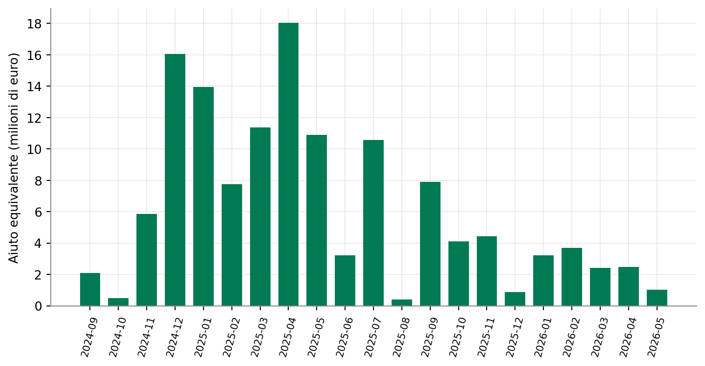
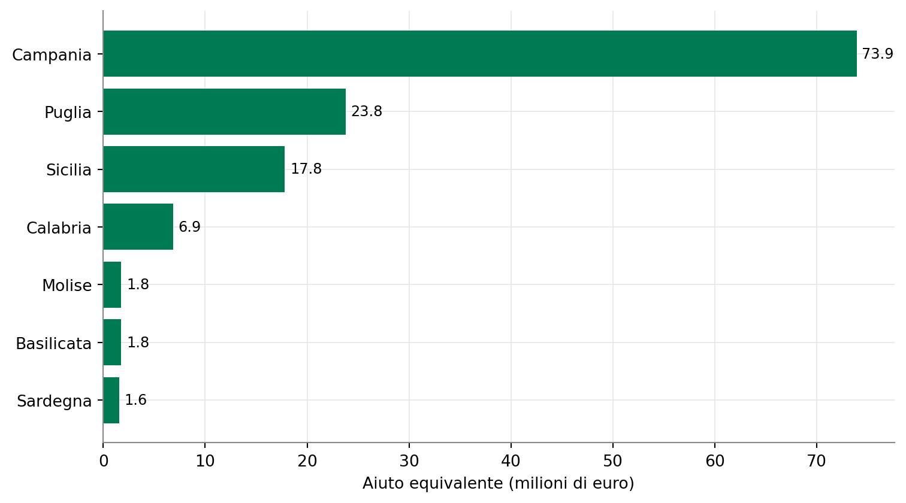
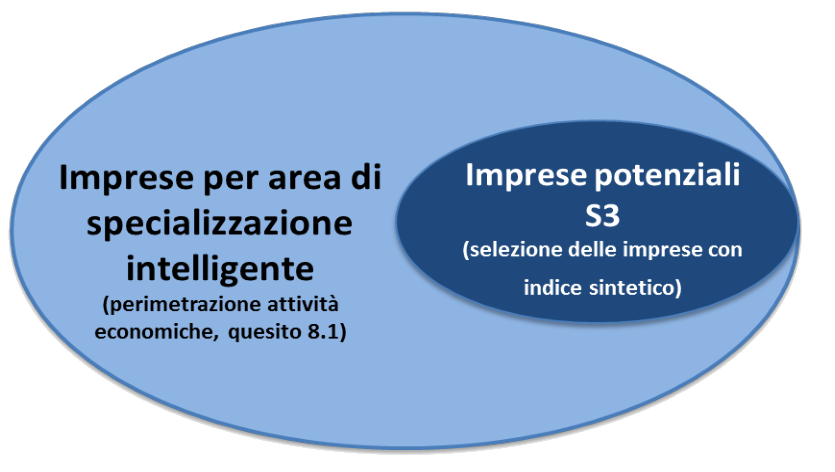

Scoperta imprenditoriale 1.0
Beneficiari, territori e architettura finanziaria della prima edizione nazionale
Paolo Volterra ![]()
Lo studio analizza la prima edizione nazionale di «Scoperta imprenditoriale», istituita dal MIMIT nel 2023 per sostenere progetti di ricerca industriale e sviluppo sperimentale nelle regioni meno sviluppate del Mezzogiorno. I dati del Registro Nazionale degli Aiuti di Stato sono circoscritti al regime SA.111204/CAR 27964 e distinti dall’omonima misura campana del 2017-2018. L’analisi separa record, componenti di aiuto, codici COR, beneficiari e titoli di progetto; descrive distribuzione territoriale, profilo settoriale, partecipazione degli organismi di ricerca e combinazione fra finanziamento agevolato e contributo diretto. La misura emerge come dispositivo ibrido fra politica della ricerca, politica industriale e coesione. Il limite valutativo decisivo è l’assenza di una catena pubblicamente osservabile che colleghi i risultati dei singoli progetti all’apprendimento istituzionale e alla revisione della Strategia nazionale di specializzazione intelligente.
scoperta imprenditoriale, MIMIT, PN RIC 2021-2027, Fondo per la Crescita Sostenibile, RNA, S3, SNSI, Mezzogiorno
Versione citabile su Zenodo, con il PDF: doi.org/10.5281/zenodo.22340806.
1 Oggetto e chiave di lettura
«Scoperta imprenditoriale» è una misura nazionale di sostegno alla ricerca industriale e allo sviluppo sperimentale istituita dal Ministero delle Imprese e del Made in Italy con il decreto 13 luglio 2023. Opera nell’Azione 1.1.4 «Ricerca collaborativa» del Programma Nazionale Ricerca, Innovazione e Competitività 2021-2027 e riguarda Basilicata, Calabria, Campania, Molise, Puglia, Sardegna e Sicilia [1], [2].
Il disegno combina tre elementi. Il primo è l’Entrepreneurial Discovery Process (EDP), derivato dalla teoria della self-discovery di Hausmann e Rodrik e incorporato dall’Unione europea nelle strategie di specializzazione intelligente: imprese, ricerca, amministrazioni e società civile dovrebbero contribuire a individuare e aggiornare le priorità tecnologiche [3], [4], [5]. Il secondo è la politica di coesione, che concentra l’intervento nelle regioni meridionali meno sviluppate. Il terzo è la tradizione italiana dei fondi rotativi per la ricerca, confluita nel Fondo per la crescita sostenibile: al contributo diretto si affianca un finanziamento agevolato sottoposto a vaglio tecnico e finanziario [6].
Questa genealogia è qui una chiave interpretativa, non l’oggetto principale. La domanda empirica è più circoscritta: chi ha beneficiato della prima edizione nazionale, quanto ha ricevuto, dove opera, in quali attività e attraverso quale combinazione finanziaria? Una seconda domanda riguarda la promessa contenuta nel nome della misura: è pubblicamente osservabile il circuito che dovrebbe trasformare gli esperimenti finanziati in apprendimento e revisione della Strategia nazionale di specializzazione intelligente?
L’universo analizzato è esclusivamente il regime SA.111204/CAR 27964. L’omonima misura regionale campana del 2017-2018 ha un’altra autorità, un altro codice di aiuto e una diversa architettura; costituisce un precedente terminologico e programmatico, ma non viene sommata ai dati nazionali. Nell’intero portafoglio storico del FCS per la ricerca, tra il 2013 e il 2023, soltanto il 31% delle agevolazioni era destinato a imprese del Mezzogiorno: la riserva territoriale integrale della misura nazionale rappresenta quindi una discontinuità significativa [6].
2 La misura nazionale 1.0
2.1 Perimetro e dati
L’analisi utilizza i dati pubblici del Registro Nazionale degli Aiuti e considera esclusivamente la misura identificata dal codice europeo SA.111204. Al momento dell’estrazione risultano 1012 osservazioni, 548 componenti di aiuto, 318 codici COR, 261 beneficiari distinti e 158 titoli di progetto distinti, con concessioni comprese tra il 13/09/2024 e il 05/05/2026. L’aiuto equivalente ammonta a 130,9 milioni di euro, a fronte di un valore nominale di 281,6 milioni.
Il record RNA non coincide né con un progetto né con un beneficiario. Un progetto può avere fino a tre proponenti, ciascun proponente può essere associato a uno o più COR e ciascun aiuto può essere articolato in componenti e strumenti diversi. RNA non pubblica il CUP: il raccordo con il monitoraggio di coesione richiede una tabella ponte costruita mediante titolo e beneficiario e verificata su OpenCoesione. Il numero delle righe, delle componenti, dei COR, dei beneficiari e dei progetti deve quindi restare distinto.
Il monitoraggio unitario della politica di coesione conferma la ricostruzione: cercando il titolo della misura tra i progetti pubblicati emergono 278 progetti, tutti dotati di CUP, per un finanziamento pubblico complessivo di 312,4 milioni di euro — coerente con il valore nominale registrato in RNA (304,8 milioni), a meno degli scarti fisiologici fra fonti aggiornate in momenti diversi [7]. Duecentoventotto progetti risultano in corso, quarantanove non ancora avviati per 65 milioni di euro e uno liquidato. Il codice fiscale del soggetto attuatore, tuttavia, è valorizzato solo su 46 dei 278 progetti: nella quasi totalità di questi casi identifica l’organismo di ricerca partner (CNR, atenei meridionali), non l’impresa privata capofila, che nel monitoraggio di coesione resta perciò in larga parte non identificabile per nome al di fuori del Registro degli Aiuti.

Figura 1: Misura nazionale 1.0: aiuto concesso per mese (milioni di euro)
2.2 Beneficiari e territorio
Le PMI rappresentano il gruppo principale: 207 beneficiari e 92,0 milioni di euro di aiuto equivalente. Seguono 28 grandi imprese con 16,9 milioni e 26 soggetti non classificati per dimensione — prevalentemente organismi pubblici di ricerca — con 22,1 milioni.
Gli organismi pubblici di ricerca (prevalentemente sedi universitarie e istituti del CNR, al quale afferiscono 3,16 milioni di euro di aiuto) operano in partenariato con le imprese, beneficiando della quota di contributo a fondo perduto per le attività di ricerca di base e industriale. Come documentato nelle indagini empiriche di Turriziani [8] e Cocorullo [9] sul trasferimento tecnologico e sui divari nella creazione di spin-off tra atenei del Nord e del Mezzogiorno, i rapporti tra mondo accademico e filiere produttive meridionali sono rimasti a lungo bloccati dall’isolamento dimensionale delle iniziative nate nei laboratori e da consulenze occasionali a fattura, prive di un disegno strategico pluriennale. Il divario è quantificabile: nella rilevazione ufficiale sugli spin-off universitari relativa al quadriennio 2011-2014, un ateneo meridionale come Messina generava in media 2,25 imprese spin-off l’anno, contro 22-25 di Politecnico di Torino e Scuola Superiore Sant’Anna di Pisa [10]. L’Azione 1.1.4 affronta questo nodo attraverso una specifica ripartizione degli impegni: l’ente di ricerca o l’ateneo riceve la sovvenzione diretta per la produzione di conoscenza, mentre l’impresa privata capofila si assume l’onere del finanziamento agevolato al 50% sul Fondo per la crescita sostenibile, ancorando il progetto a un vincolo di sostenibilità industriale e bancabilità.
Nei microdati della misura nazionale sono identificabili 16 atenei, mediante normalizzazione delle denominazioni sul codice fiscale, per 36 partecipazioni progettuali e 12,99 milioni di euro di aiuto. Federico II e Salerno partecipano a cinque progetti ciascuna, Messina a quattro e l’Università della Calabria a tre. Il portafoglio universitario riflette direttamente le KET e le traiettorie della SNSI: salute e scienze della vita (nutraceutica, telemedicina, diagnostica oncologica NGS, biomateriali), intelligenza artificiale e cybersicurezza, sostenibilità energetica e ambientale, manifattura e materiali avanzati, diagnostica ferroviaria e intralogistica, BIM ed economia del mare. L’Università Parthenope, individuata anche tra i record con ATECO originariamente mancante, è associata a TRACE, sulla diagnostica degli errori nelle costruzioni, INTRALOG-A², sull’intralogistica automotive, e FOIL-AI-MATIC, sull’applicazione dell’IA a imbarcazioni elettriche dotate di superfici fotovoltaiche; per quest’ultimo RNA non espone ancora la componente finanziaria.
| Tipo | Record RNA | Beneficiari | Aiuto (M€) | Nominale (M€) | |
|---|---|---|---|---|---|
| 0 | PMI | 818 | 207 | 92.0 | 214.7 |
| 1 | Non classificato / ricerca | 79 | 26 | 22.1 | 24.3 |
| 2 | Grande impresa | 115 | 28 | 16.9 | 42.5 |
Tabella 1: Beneficiari della misura nazionale per tipologia
2.3 Profilo ATECO delle imprese beneficiarie
L’analisi settoriale è circoscritta ai 235 beneficiari classificati in RNA come PMI o grande impresa, destinatari di 108,86 milioni di euro di aiuto equivalente. Sono esclusi gli atenei e gli altri organismi di ricerca, perché il loro codice descrive prevalentemente istruzione o ricerca istituzionale e altererebbe la lettura della struttura produttiva. L’ATECO identifica inoltre l’attività economica prevalente del beneficiario, non il dominio tecnologico del progetto: un’impresa alimentare può sviluppare intelligenza artificiale, così come una software house può partecipare a un progetto sanitario.
| Divisione | Attività prevalente | Componenti RNA | Imprese | Aiuto (M€) | Nominale (M€) | |
|---|---|---|---|---|---|---|
| 0 | 62 | Software e consulenza informatica | 350 | 85 | 33.42 | 76.01 |
| 1 | 10 | Industrie alimentari | 56 | 13 | 8.06 | 17.30 |
| 2 | 72 | Ricerca scientifica e sviluppo | 64 | 17 | 5.54 | 13.24 |
| 3 | 22 | Gomma e materie plastiche | 34 | 8 | 5.37 | 14.77 |
| 4 | 86 | Assistenza sanitaria | 40 | 10 | 5.12 | 12.32 |
| 5 | 21 | Prodotti farmaceutici | 26 | 6 | 4.52 | 11.69 |
| 6 | 33 | Riparazione e installazione di macchine | 30 | 7 | 4.34 | 10.02 |
| 7 | 28 | Macchinari e apparecchiature | 29 | 9 | 4.23 | 9.77 |
| 8 | 30 | Altri mezzi di trasporto | 24 | 6 | 4.22 | 10.88 |
| 9 | 71 | Architettura, ingegneria e collaudi | 40 | 11 | 4.07 | 9.34 |
| 10 | 26 | Computer, elettronica e ottica | 28 | 9 | 3.80 | 8.35 |
| 11 | 25 | Prodotti in metallo | 14 | 4 | 2.64 | 5.76 |
Tabella 2: Principali divisioni ATECO/NACE delle imprese beneficiarie
Il profilo è fortemente tecnologico ma non esclusivamente digitale. La divisione 62 — software e consulenza informatica — è il primo comparto con 85 imprese e 33,42 milioni di euro, pari al 30,7% dell’aiuto alle imprese. Considerando aggregati più ampi, la manifattura (divisioni 10–33) assorbe 45,87 milioni, il 42,1%; informazione e comunicazione (58–63) 35,63 milioni, il 32,7%; attività professionali, scientifiche e tecniche (69–75) 12,80 milioni, l’11,8%. Seguono sanità e assistenza con 5,12 milioni. Dentro la manifattura emergono alimentare, plastica, farmaceutica, macchinari, mezzi di trasporto ed elettronica: la misura finanzia soprattutto l’incontro fra una robusta componente ICT e filiere produttive nelle quali le tecnologie digitali e abilitanti vengono applicate.
La concentrazione settoriale segnala anche un criterio di valutazione futura. Occorrerà distinguere se la prevalenza del software rappresenti una nuova capacità trasversale che trasforma più filiere — coerentemente con l’EDP — oppure la maggiore capacità delle imprese ICT già organizzate di accedere alla procedura. Il confronto con i denominatori ISTAT S3 per regione e divisione ATECO permetterà di separare almeno in parte specializzazione del territorio e intensità di accesso alla misura.
La Campania è il baricentro della misura: sulle operazioni attribuite a una sola regione concentra 73,9 milioni di euro, davanti a Puglia (23,8 milioni) e Sicilia (17,8 milioni). Esistono anche progetti multiregionali e pochi record attribuiti fuori dall’area obiettivo; questi ultimi richiedono cautela perché RNA può riportare la sede del beneficiario o combinazioni territoriali che non coincidono semplicemente con l’unità locale di realizzazione.

Figura 2: Misura nazionale 1.0: aiuto per regione singola di attribuzione (milioni di euro)
La concentrazione campana è compatibile con una continuità di capacità progettuale costruita anche nella programmazione precedente, ma riflette innanzitutto un preciso fondamento strutturale. Come emerge dai microdati del Censimento permanente delle imprese Istat sulla specializzazione intelligente [11], la Campania disponeva alla vigilia del bando di 27.337 imprese attive nei domini tecnologici della S3, superando ampiamente la Sicilia (20.394) e la Puglia (18.962). Tale divario di scala produttiva e scientifica diventa ancora più marcato nei comparti che hanno guidato la misura nazionale: nell’Aerospazio la Campania contava 1.618 imprese specializzate (contro le 699 pugliesi e le 474 siciliane), mentre nei settori Salute e Biotecnologie ne aggregava 5.149. Su questa base più ampia si innesta un secondo dato, più selettivo: fra le imprese S3 campane, 294 (l’1,1%) intrattenevano accordi formali con università o centri di ricerca, quota superiore a quella pugliese (107, 0,6%) e siciliana (61, 0,3%) e al dato medio nazionale (1.803 su 359.495 imprese S3, 0,5%). Il primato nell’aggiudicazione delle risorse corrisponde dunque a un’oggettiva concentrazione di MPMI innovative, con un nucleo relativamente più ampio — ma comunque circoscritto — di legami accademici formalizzati rispetto ai requisiti tecnologici previsti dall’avviso.

Figura 3: Le due popolazioni della classificazione S3: la perimetrazione per area di specializzazione (quesito 8.1 del Censimento) e la selezione più stretta delle imprese potenziali S3 tramite indice sintetico. Fonte: ISTAT, Indicatori per la Strategia di Specializzazione Intelligente (2022) [12].
La distinzione tra le due popolazioni della Figura 3 chiarisce anche perché i due dati sopra citati non vadano confusi: il totale per area (27.337, 20.394, 18.962) è la perimetrazione anagrafica per attività dichiarata, mentre gli accordi università sono una singola misura comportamentale interna a un indice composito a cinque dimensioni — di cui le relazioni con università, centri di ricerca, pubblica amministrazione e altre imprese sono solo una delle componenti elementari, insieme a investimenti in R&S, innovazione, capitale umano, internazionalizzazione e produttività [12].
ISTAT costruisce dal 2019 un sistema di indicatori dedicato alla specializzazione intelligente, aggiornato con la seconda edizione del Censimento permanente delle imprese 2022 e confrontabile con la prima [11]. La classificazione delle «imprese potenziali S3» integra i dati censuari con i registri statistici di base delle imprese attive e combina la classificazione ATECO con un indice composito su cinque dimensioni — ricerca e sviluppo, innovazione, capitale umano, capacità di creare relazioni e apertura internazionale, produttività [12]. Queste dimensioni disegnano un identikit strutturale del tipo di impresa a cui la politica si rivolge — non delle singole imprese beneficiarie, ma del profilo aggregato dell’universo potenzialmente eleggibile: addetti, valore aggiunto ed esportazioni, investimenti in ricerca e sviluppo, tecnologie abilitanti, progetti innovativi e accordi formali con università, centri di ricerca, pubblica amministrazione e altre imprese, per ciascuna delle dodici aree di specializzazione regionali e delle cinque aree tematiche nazionali che le aggregano [13], [14]. Incrociato a livello aggregato con RNA, questo patrimonio permette di calcolare non soltanto la quota degli aiuti, ma la loro intensità rispetto alla base produttiva potenziale: beneficiari per mille imprese S3, euro di aiuto per addetto e copertura delle diverse specializzazioni. Non identifica tuttavia le singole imprese né i partecipanti ai tavoli EDP e, da solo, non dimostra che la misura abbia causato maggiore innovazione: fornisce il denominatore strutturale e il benchmark territoriale — l’identikit statistico dell’impresa target, non il controfattuale della singola impresa finanziata.
2.4 Prestito e contributo: l’innesto FCS
Il decreto prevede due forme effettive di agevolazione: un finanziamento agevolato pari al 50% dei costi ammissibili e un contributo diretto alla spesa, differenziato secondo dimensione e caratteristiche del progetto [1]. L’etichetta aggregata di RNA «Sovvenzione/Contributo in conto interessi» non deve essere interpretata come prova dell’esistenza di un autonomo contributo in conto interessi: il testo del decreto ministeriale e i relativi allegati attuativi lo escludono esplicitamente, trattandosi di una categorizzazione tecnica convenzionale del registro.
| Etichetta RNA | Record RNA | Aiuto (M€) | Nominale (M€) | |
|---|---|---|---|---|
| 0 | Prestito/Anticipo rimborsabile | 465 | 23.7 | 158.3 |
| 1 | Sovvenzione/Contributo in conto interessi | 541 | 107.2 | 123.3 |
Tabella 3: Strumenti registrati in RNA per la misura nazionale 1.0
I prestiti rappresentano 158,3 milioni di euro, pari a circa il 56% del valore nominale osservato. Il loro aiuto equivalente è molto inferiore al capitale erogato perché misura il vantaggio finanziario del tasso agevolato, non l’intero importo da restituire. Se il prestito agevolato disegni incentivi più efficienti della sovvenzione a fondo perduto non è verificabile con i soli dati RNA: richiederebbe dati su revoche, recuperi e insolvenze, non disponibili pubblicamente. La letteratura italiana sui grandi incentivi in conto capitale — costruita principalmente sulla legge 488/92, il precedente di maggiore scala per finalità di riequilibrio territoriale1 — mostra in ogni caso che il nesso fra sussidio ed efficienza produttiva non è automatico: le imprese finanziate investono di più nel breve periodo rispetto a quelle escluse dal finanziamento, ma rallentano significativamente l’attività di investimento negli anni successivi al programma e, nei mercati più piccoli o affollati di concorrenti simili, sottraggono quote alle imprese non finanziate [15].
2.5 Dalla graduatoria all’istruttoria di merito
Quando le risorse non bastano per tutte le domande presentate nello stesso giorno, l’accesso all’istruttoria è ordinato mediante indicatori di solidità economico-finanziaria. La capacità di rimborso deve essere almeno pari a 0,8, valore che nella griglia equivale a 3,2 punti. Gli altri indicatori riguardano copertura delle immobilizzazioni, indipendenza finanziaria, incidenza degli oneri finanziari e redditività operativa.
Questa graduatoria non coincide con la decisione finale. Nella successiva fase istruttoria il gestore valuta la documentazione amministrativa, i codici ATECO, la congruità dei piani di spesa, la qualità delle collaborazioni e l’effettivo impatto innovativo, potendo richiedere integrazioni documentali ed effettuare decurtazioni delle voci non ammissibili. L’adozione di rigorosi filtri di bilancio e della soglia minima sulla capacità di rimborso (0,8 / 3,2 punti) riflette l’esigenza strutturale di salvaguardare la rotatività del Fondo per la crescita sostenibile: come accertato dalla Corte dei Conti nella deliberazione generale sull’operatività del FCS [16], la tenuta economica del fondo a rientro decennale dipende in modo determinante dalla selezione preventiva del merito creditizio, indispensabile per contenere le insolvenze e le revoche entro margini fisiologici. Non sono tuttavia pubblicati microdati aperti sull’esito puntuale di tali istruttorie di merito (tassi aggregati di rinuncia, decadenza o rimodulazione degli importi) né sull’effettivo andamento di ammortamenti, rate e recuperi per la misura.
La misura combina quindi due logiche:
- prudenziale, perché il finanziamento agevolato deve poter essere restituito;
- tecnico-industriale, perché il progetto deve produrre ricerca industriale e sviluppo sperimentale credibili.
Definirla una semplice procedura bancaria sarebbe riduttivo. Al tempo stesso, la posizione iniziale in caso di scarsità delle risorse dipende dalla solidità dell’impresa e non dalla qualità tecnologica del progetto: ciò può svantaggiare nuovi entranti e imprese innovative finanziariamente più fragili.
2.6 La domanda decisiva: dove avviene la scoperta?
Il DM ammette sia progetti coerenti con le traiettorie già comprese nella Strategia nazionale di specializzazione intelligente, sia progetti in altre aree capaci di alimentarne l’adattamento evolutivo [1].2 È questo secondo canale a rendere letterale la promessa contenuta nel nome: finanziare esperimenti dai quali possano emergere nuovi domini di specializzazione.
La governance prevista non è priva di sedi pubbliche. La SNSI affida il confronto a un partenariato che comprende amministrazioni centrali e regionali, cluster e rappresentanze delle imprese, organismi di ricerca e società civile; un Sottocomitato dovrebbe mantenere il dialogo tra definizione, attuazione, monitoraggio e aggiornamento della strategia [17]. Non è invece pubblicata una catena che colleghi i contributi dei singoli partecipanti alle scelte del decreto o gli esiti dei singoli progetti alle successive revisioni della SNSI.
I dati RNA consentono di sapere chi riceve l’aiuto, quando, dove e attraverso quale strumento. Non consentono invece di verificare il circuito informativo fondamentale dell’EDP:
progetto sperimentale → risultato osservato → apprendimento pubblico → revisione della SNSI → nuovi strumenti.
Il risultato valutativo è quindi preciso: il canale istituzionale di apprendimento esiste negli atti, ma il suo funzionamento progetto per progetto non è ancora documentato pubblicamente. Non risultano una classificazione pubblica dei progetti esterni alle traiettorie vigenti, verbali che ne discutano gli esiti o un aggiornamento della SNSI che motivi nuove priorità richiamando le evidenze prodotte. Senza questo ritorno osservabile, «scoperta imprenditoriale» rischia di restare il nome innovativo di un tradizionale bando di R&S.
Il rischio che un EDP funzioni più da rituale di consultazione che da reale meccanismo di scoperta è un tema riconosciuto nella letteratura sulla specializzazione intelligente, non un sospetto isolato su questo caso. Rodríguez-Pose e Wilkie mostrano come la qualità delle istituzioni locali condizioni la capacità del processo di produrre conoscenza distribuita, anziché essere dominato da chi ha già voce in capitolo [18].
Sul caso italiano, Iacobucci e Guzzini rilevano che poche strategie di specializzazione intelligente hanno effettivamente applicato il criterio di relatedness fra domini tecnologici richiesto dalle linee guida europee [19]. In una prospettiva neo-istituzionalista, Benner propone inoltre di leggere la RIS3, dove mancano solide capacità amministrative, come cerimonia organizzativa più che come processo sostanziale [20].
Questa letteratura non offre evidenza sulla specifica misura «Scoperta imprenditoriale». Mostra però che la domanda posta in questo lavoro appartiene a un filone di ricerca consolidato sull’intera politica europea di specializzazione intelligente.
3 Che cosa mostra la prima edizione
La prima edizione nazionale non è una misura isolata né un semplice trasferimento a fondo perduto. È la convergenza tra una teoria internazionale della scoperta, la governance territoriale europea S3/EDP, la tradizione italiana FIT/FCS di prestiti e contributi alla ricerca e una finalità di riequilibrio delle capacità innovative del Mezzogiorno.3
La Campania occupa una posizione particolare in questa storia. Prima sperimenta una famiglia regionale di strumenti esplicitamente intestata alla scoperta imprenditoriale; poi diventa il maggiore territorio di destinazione della misura nazionale. Il passaggio è programmaticamente coerente, anche se non è documentata una decisione ministeriale che attribuisca causalmente il programma nazionale al successo del precedente campano.
La valutazione non può dunque limitarsi alla spesa. Deve accertare l’addizionalità — esperimenti, collaborazioni e capacità industriali che senza sostegno non sarebbero nati — e soprattutto la conversione dei risultati in conoscenza pubblica. Allo stato, concessioni e architettura finanziaria sono osservabili; il passaggio dai risultati dei 158 progetti alla revisione delle priorità della SNSI non lo è ancora.
3.1 Implicazioni per gli intermediari finanziari
L’analisi condotta suggerisce una lettura ulteriore, di interesse per gli intermediari finanziari e i soggetti gestori impegnati nell’allocazione del credito agevolato alla ricerca. La classificazione statistica della specializzazione intelligente non identifica singole imprese, ma definisce un profilo di popolazione target utilizzabile come criterio di segmentazione territoriale e settoriale a monte dell’istruttoria di merito. Le chiavi rilevanti per delimitare un simile cluster, generalizzabili oltre il caso qui esaminato, combinano una dimensione anagrafica e una comportamentale: il territorio di riferimento (regione o ripartizione geografica), il settore o l’area di specializzazione tecnologica in cui l’impresa opera, la classe dimensionale (soglia minima di addetti al di sotto della quale la rilevazione censuaria stessa non si applica), e le cinque dimensioni che compongono l’indice sintetico di propensione alla specializzazione intelligente — intensità della ricerca e sviluppo, innovazione di prodotto/processo e tecnologico-digitale, capitale umano, capacità relazionale e apertura internazionale, produttività [11], [12].
Un secondo strumento, distinto ma complementare, è offerto dai registri amministrativi degli aiuti di Stato: a differenza della statistica ufficiale, che tutela la riservatezza del singolo rispondente e diffonde soltanto aggregati, un registro delle concessioni pubbliche identifica nominativamente i beneficiari già selezionati da una misura di ricerca e innovazione — una popolazione la cui propensione innovativa è stata verificata a monte dall’amministrazione concedente, e che costituisce quindi un bacino naturale per relazioni creditizie complementari a quelle già in essere.
Il passaggio da un profilo statistico aggregato a un elenco nominativo di imprese resta tuttavia un’operazione metodologicamente distinta dalla misurazione statistica in sé: richiede l’incrocio con basi informative anagrafiche o camerali esterne alla statistica ufficiale, e un giudizio di merito che nessuna classificazione settoriale può sostituire.
4 Epilogo: «Scoperta imprenditoriale II» e l’evoluzione del concept
Il decreto ministeriale 19 maggio 2026 rifinanzia e consolida la misura con una dotazione di 505,8 milioni di euro a valere sul PN RIC 2021-2027 [21]. Il successivo decreto direttoriale 6 agosto 2026 [22] ne disciplina i termini operativi, introducendo un significativo apprendimento procedurale rispetto alla prima edizione: - dal 24 settembre al 6 ottobre 2026 (ore 10:00-18:00) è prevista una fase preliminare di compilazione guidata della domanda sulla piattaforma di Mediocredito Centrale; - il 7 ottobre 2026 alle ore 10:00 si apre lo sportello per l’invio telematico definitivo.
La sdoppiatura fra pre-compilazione e invio telematico risponde direttamente alle criticità riscontrate nella prima edizione: nel 2024 l’immediata saturazione dello sportello nel giorno di apertura («click-day») aveva costretto il gestore ad attivare massicciamente la griglia di merito creditizio dell’Allegato 8 (capacità di rimborso \(\ge 0,8\), equivalente a 3,2 punti) per ordinare le domande pervenute nello stesso giorno prima di avviare l’istruttoria. La valutazione indipendente del Ministero quantifica ex post questa sovra-sottoscrizione: a fronte di una dotazione di 300 milioni di euro, le domande presentate richiedevano complessivamente 402,63 milioni di euro di spesa ammissibile — un rapporto domande/dotazione di circa 1,34 — mentre nessun progetto risultava ancora decretato alla data di rilevazione del rapporto [6].4 La finestra preventiva di compilazione mira a decongestionare i sistemi informatici e a consentire ai partenariati una più accurata calibrazione del piano di spesa e del piano finanziario di rientro.
Sul piano dell’architettura economica e finanziaria, «Scoperta imprenditoriale II» conferma integralmente le scelte strutturali della 1.0:
conferma del modello ibrido FCS-PN RIC: finanziamento agevolato al 50% dei costi ammissibili (al tasso agevolato pari al 20% del tasso di riferimento, con rimborso fino a 8 anni oltre a 3 di preammortamento) a carico del Fondo per la crescita sostenibile, abbinato a un contributo diretto alla spesa (fondo perduto) finanziato dalle risorse comunitarie del PN RIC;
presidio creditizio e bancario: mantenimento della soglia minima di affidabilità finanziaria e della capacità di rimborso, affidata all’istruttoria di Mediocredito Centrale, per evitare la dispersione a fondo perduto e selezionare soggetti in grado di sostenere il co-investimento privato;
riserva Mezzogiorno e scala dei progetti: concentrazione esclusiva nelle regioni meno sviluppate e in transizione (Basilicata, Calabria, Campania, Molise, Puglia, Sardegna, Sicilia) e conferma della taglia minima e massima dei progetti (da 1 a 5 milioni di euro), orientata a filiere strutturate e aggregazioni collaborative stabili (imprese e organismi di ricerca).
Anche la scala finanziaria segnala un mutamento di rango: dai 300 milioni di euro resi disponibili nel 2023 si passa a 505,8 milioni nel 2026, con un incremento di 205,8 milioni, pari al 68,6% [1], [21]. Non è ancora una prova di efficacia — che richiederà di osservare realizzazioni, addizionalità, rimborsi ed esiti industriali — ma costituisce una forte preferenza rivelata del decisore pubblico per la continuità e il rafforzamento dell’impostazione.
La scelta appare inoltre coerente con l’evoluzione del PN RIC e della politica industriale europea: la nuova edizione resta formalmente incardinata nell’Azione 1.1.4 «Ricerca collaborativa», e non nella distinta Priorità STEP, ma concentra gli interventi su materiali avanzati e nanotecnologie, fotonica e micro/nanoelettronica, sistemi avanzati di produzione, scienze della vita, intelligenza artificiale, connessione e sicurezza digitale. Sono ambiti che, oltre a sostenere le transizioni verde e digitale e l’adattamento della SNSI, intercettano le esigenze divenute più pressanti nel nuovo contesto geopolitico: autonomia tecnologica, resilienza delle catene del valore e presidio delle tecnologie critiche. Il rifinanziamento suggerisce dunque che il modello perfezionato — ricerca collaborativa, apertura a nuove traiettorie, co-investimento e selezione economico-finanziaria — sia considerato idoneo ad accompagnare priorità strategiche mobili; non consente ancora di concludere che abbia già prodotto i risultati attesi.
La seconda edizione non può ancora essere valutata attraverso concessioni ed esiti occupazionali o tecnologici. In questa sede svolge tuttavia una funzione interpretativa essenziale: dimostra che «Scoperta imprenditoriale» non è stata un’iniziativa estemporanea o un mero artificio nominalistico, bensì il prototipo di una rinnovata politica industriale nazionale per il Mezzogiorno. L’arco evolutivo che va dal Fondo IMI del 1968 e dalla legge 46/1982, attraverso i bandi regionali S3 del ciclo 2014-2020 e i limiti della sovvenzione pura rilevati dai RAV, approda così a un assetto maturo: la rotatività del credito agevolato nazionale viene stabilmente innestata sul mandato di coesione europea e sulla ricerca collaborativa guidata dalla scoperta imprenditoriale.
Nota metodologica
Questo documento nasce dall’interazione di tre componenti. L’autore definisce le domande, esercita il giudizio critico e assume la responsabilità scientifica ed editoriale del risultato. Strumenti di intelligenza artificiale generativa sono impiegati a supporto della ricerca bibliografica, della lettura, della sintesi, della riorganizzazione argomentativa e della revisione del testo. Un’infrastruttura open source sviluppata dall’autore automatizza il reperimento, l’armonizzazione e il controllo dei dati dalle fonti statistiche ufficiali, e mantiene l’elaborazione documentata e riproducibile.
Le fonti sono pubblicamente accessibili e citate con la loro denominazione ufficiale; l’analisi è pertanto integralmente auditabile e replicabile da terzi a partire da esse. Le tabelle e i grafici sono elaborazioni dell’autore: calcoli, aggregazioni, trasformazioni e scelte di rappresentazione sono attribuibili all’autore e non agli enti produttori dei dati.
La responsabilità per le fonti utilizzate, le analisi condotte, le elaborazioni effettuate, le interpretazioni proposte e le conclusioni formulate resta interamente in capo all’autore. L’intelligenza artificiale è stata impiegata come ambiente di supporto cognitivo ed editoriale, non come fonte primaria, autore autonomo o sostituto del giudizio critico.
4.1 Referenze
4.2 Note
4.3 Riutilizzare
CC-BY-4.0
Note
La legge 488/92 sussidiava investimenti fissi materiali (macchinari, impianti) delle imprese, non attività di ricerca e sviluppo: una genealogia distinta da quella qui ricostruita (Fondo IMI 1968, legge 46/1982, FCS), ma di scala paragonabile e con analoga finalità di riequilibrio territoriale — 16 miliardi di euro erogati fra il 1996 e il 2003, in prevalenza a imprese del Mezzogiorno [15].↩︎
Il decreto lo dichiara esplicitamente all’art. 4: i progetti devono essere realizzati «al fine di contribuire ad alimentare il processo di scoperta imprenditoriale e il conseguente adattamento evolutivo della [Strategia nazionale di specializzazione intelligente]» [1], art. 4, p. 10.↩︎
Tutti i numeri presentati nel corpo empirico riguardano esclusivamente la misura nazionale SA.111204/CAR 27964. Le esperienze greche, portoghesi e campane e il FIT sono utilizzate come contesto genealogico e comparativo, non sommate all’universo della prima edizione MIMIT.↩︎
Vision & Value, Valutazione dell’efficacia delle misure di sostegno all’attività di ricerca e innovazione… sostenute dal FCS (2025), Tabelle 3.1.2-3.1.3: «Scoperta imprenditoriale PON 2021/2027 Dm 13 luglio 2023» — dotazione iniziale e finale 300.000.000 €; spese ammissibili richieste da tutte le domande presentate 402,63 milioni; agevolazioni concesse ed erogazioni pari a zero alla data del rapporto [6].↩︎